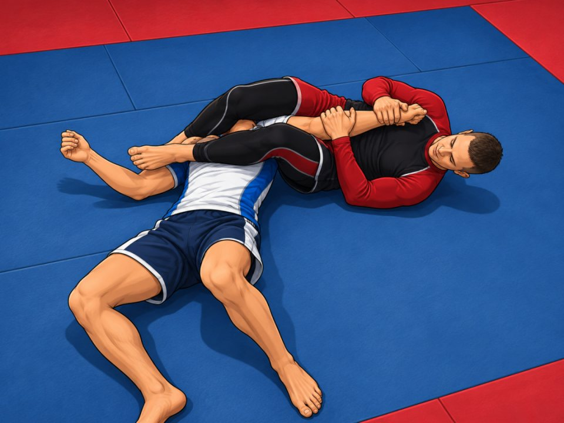
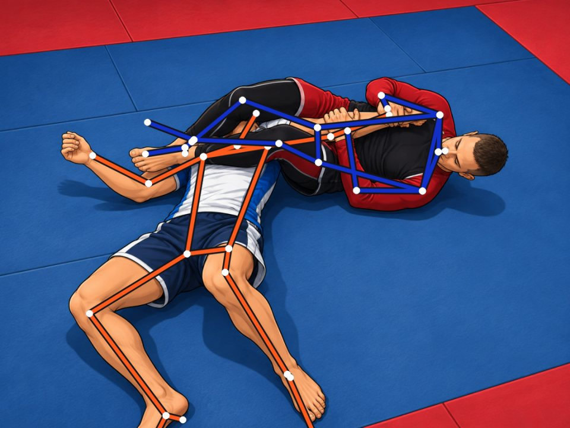
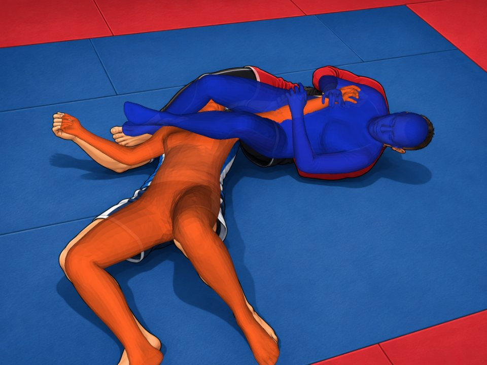
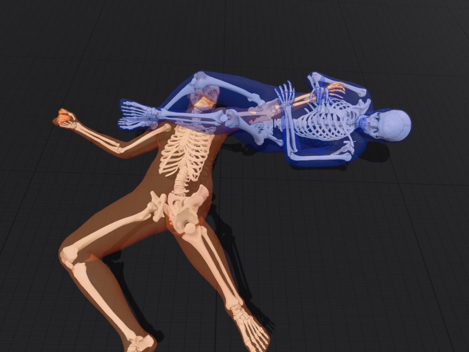

One photo. Two bodies. The bones inside.
Each scene above starts from a single photo of two people grappling on the mat. Computer vision models estimate a 3D body for each person (monocular 3D human pose estimation and human mesh recovery), both bodies are placed on the mat, and an anatomical skeleton is posed inside each one. Open "The photo's view" to stand where the camera stood, then walk around the position.
From a photo of an arm bar to a 3D skeleton, in four steps

The picture. One photo of an arm bar (armbar, juji-gatame), shown here as a drawing of the original photo. 
Joint centres. 3D pose estimation finds 70 keypoints per person, including shoulders, elbows, wrists, hips, knees and ankles. 
Body model. Human mesh recovery fits a full 3D body surface to each person (18,439 vertices each). 
Anatomical skeleton. The bones of an anatomical atlas are posed inside each body, so the position can be viewed from any side.
The computer vision pipeline
Three publicly released models process the photo, each with its own job, followed by two steps of geometry. The whole pipeline runs on a home PC with one consumer graphics card.
- Segmentation. SAM 3 (Segment Anything Model 3) separates the two people, also where their arms and legs are intertwined.
- Camera and mat. MoGe-2 estimates the camera's field of view and a depth map of the scene, from which the tilt of the mat is fitted.
- 3D pose and body shape. SAM 3D Body estimates each person's 3D joint positions and a full body mesh from the single image, a form of markerless motion capture.
- Joint angles. Eight angles per person are computed from the 3D joint centres: elbow and knee flexion, shoulder elevation and hip flexion, on both sides.
- Skeleton. One adult skeleton from the BodyParts3D atlas is scaled segment by segment and posed to follow each person's joints, the hand bones finger joint by finger joint.
Estimated joint angles in the two positions
Flexion is 0° for a straight elbow or knee. Shoulder elevation and hip flexion are the angles between the upper arm or thigh and the long axis of the trunk. All values come from one image and are rounded to the degree.
| Joint angle | Defender (orange) | Attacker (blue) |
|---|---|---|
| Right elbow flexion | 57° | 109° |
| Left elbow flexion | 13° | 79° |
| Right knee flexion | 91° | 84° |
| Left knee flexion | 103° | 93° |
| Right shoulder elevation | 52° | 16° |
| Left shoulder elevation | 101° | 19° |
| Right hip flexion | 38° | 60° |
| Left hip flexion | 54° | 85° |
| Joint angle | Bottom person (orange) | Top person (blue) |
|---|---|---|
| Right elbow flexion | 94° | 81° |
| Left elbow flexion | 77° | 68° |
| Right knee flexion | 86° | 19° |
| Left knee flexion | 116° | 64° |
| Right shoulder elevation | 91° | 102° |
| Left shoulder elevation | 77° | 94° |
| Right hip flexion | 34° | 7° |
| Left hip flexion | 53° | 40° |
In the arm bar, the defender's left arm is the one being extended (13° of elbow flexion). Part of that arm is hidden between the attacker's legs in the photo, so its angle rests on the model's completion of the hidden part.
What it is for
A 3D reconstruction from one photo gives the approximate posture of both people, which is what illustration and teaching need: showing a patient or an athlete how a submission loads a joint, teaching anatomy on real grappling positions, or documenting a position from training.
The aim of the project is to describe grappling positions in 3D, so that each one can be examined from any side.
How to read it
The body surfaces and joint positions are estimates from one image. A point's position across the image is more certain than its depth along the camera's line of sight, and limbs hidden behind the partner are completed by the model from what it has learned about human bodies.
The skeleton is one atlas skeleton fitted to each body: each group of bones is shifted, turned or slimmed slightly to lie under the reconstructed surface, the skull is seated by its shape inside the head, and where a bone would still show through (bent knees, shins, parts of the head and pelvis) the surface is lifted locally by 3 cm at most. It shows where the bones lie approximately; the kneecaps and the bones around strongly bent knees are the least exact, and the wrists are kept straight.
Questions
Can joint angles be estimated from a single photo?
Yes, as estimates. A 3D pose estimation model returns the 3D position of each joint centre, and the angle at a joint follows from the directions of the two segments that meet there. The angles here describe posture (how bent an elbow or a knee is); they do not separate flexion from abduction or rotation.
Does 3D motion analysis of jiu-jitsu need a motion capture lab?
For a picture of a position, a phone photo is enough: the reconstruction uses no markers, suits or calibrated cameras. For measuring joint kinematics over time, a motion capture laboratory is the reference.
Which models reconstruct the two grapplers?
SAM 3 separates the two people, MoGe-2 estimates the camera and the mat, and SAM 3D Body estimates the 3D joints and body mesh of each person. All three are published with their weights on Hugging Face.
Where do the bones come from?
From BodyParts3D, an open anatomical atlas of one adult body. The same skeleton is scaled and posed for both people, so the bones show position and joint posture, and individual bone shape is the atlas's.